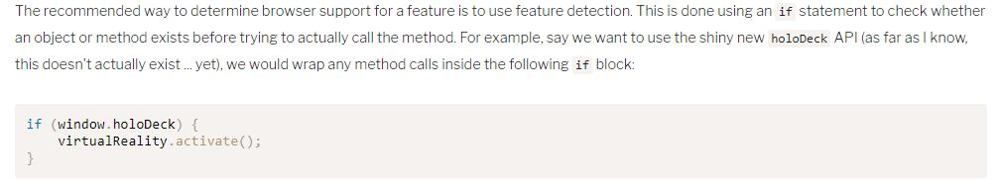
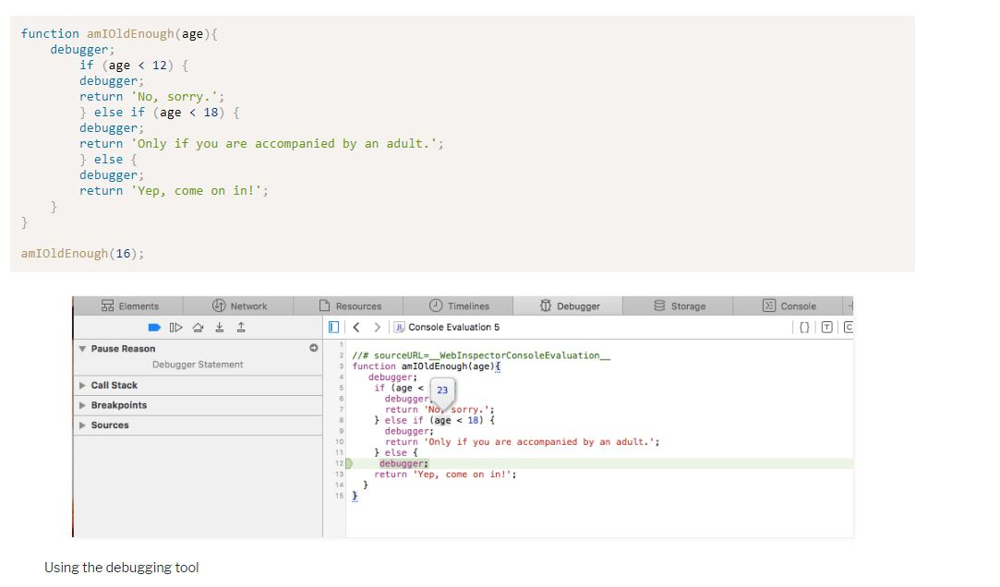

Javascript: Novice to Ninja Chapter 10: Testing and Debugging
Error producing a return value that can be used by program to deal with the error.
Sequence of function calls leading to the point where the error occured.
Errors in code that do not cause a program crash. May cause program to run incorrectly.
Write code that fails loudly in development, and gracefully in production.
Produces more exceptions and warnings, and prohibits use of some deprecated features.
To use, add 'use strict'; to top of javascript file or functionto apply to entire file or only function.
Used to test quality of code. Highlight sloppy practices, syntax errors, and help enforce conventions and style guides.
Used to determine browser suppoert for a feature (API)
alert() method can be used to dialogs at certain points in the code. Effectively adds a breakpoint if desired. Not recommended now because of more options today.
Use console object. EX: console.log(), console.trace(), etc.
Can be used to set breakpoints.
debugger keyword can be used to create breakpoints in the code.
Use throw statement to throw your own exceptions. Best practice dictates throwing an error object, which is caught in a catch block
Gracefully handle exceptions by catching errors.
Wrap code that can result in an exception in a try block.
Can be as simple as a function testing that a piece of code runs as it should.
Process of writing tests before any code. Then write the code to pass the tests.
Ex: Jest, a TDD framework created by Facebook.